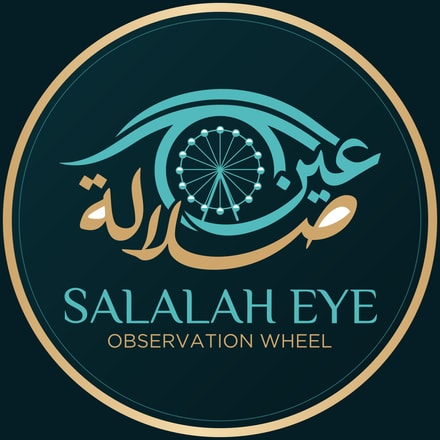
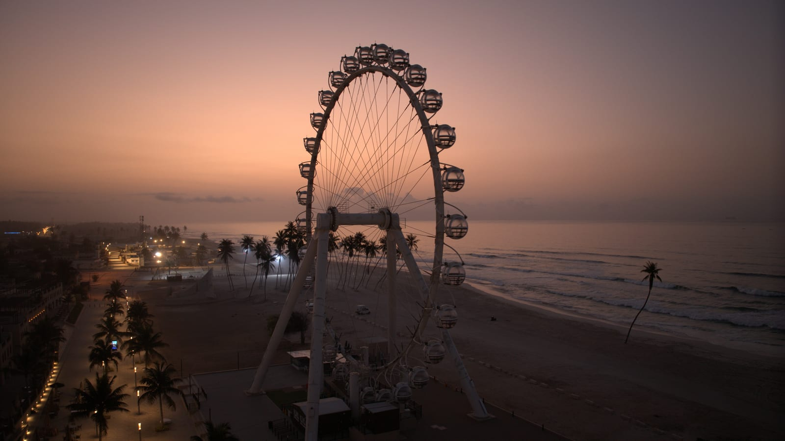
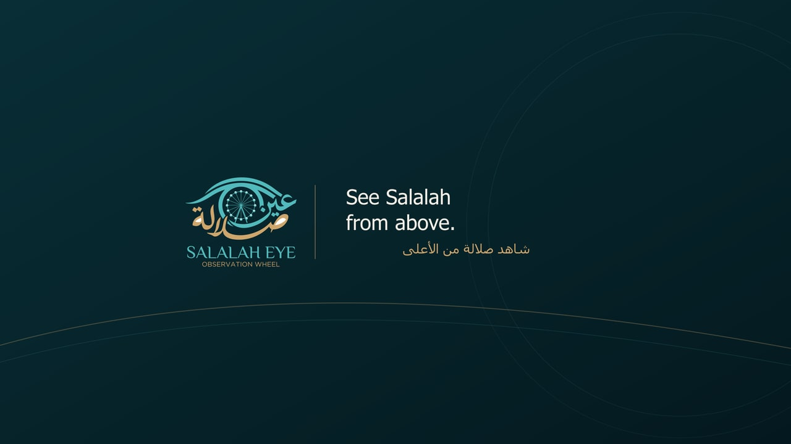
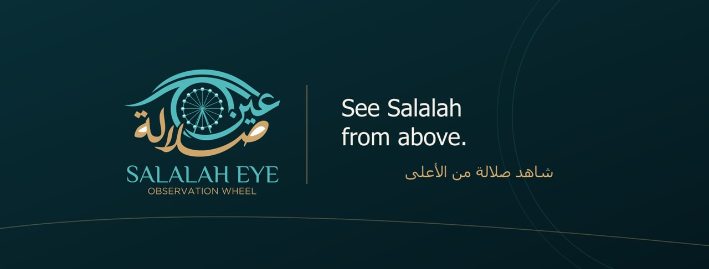
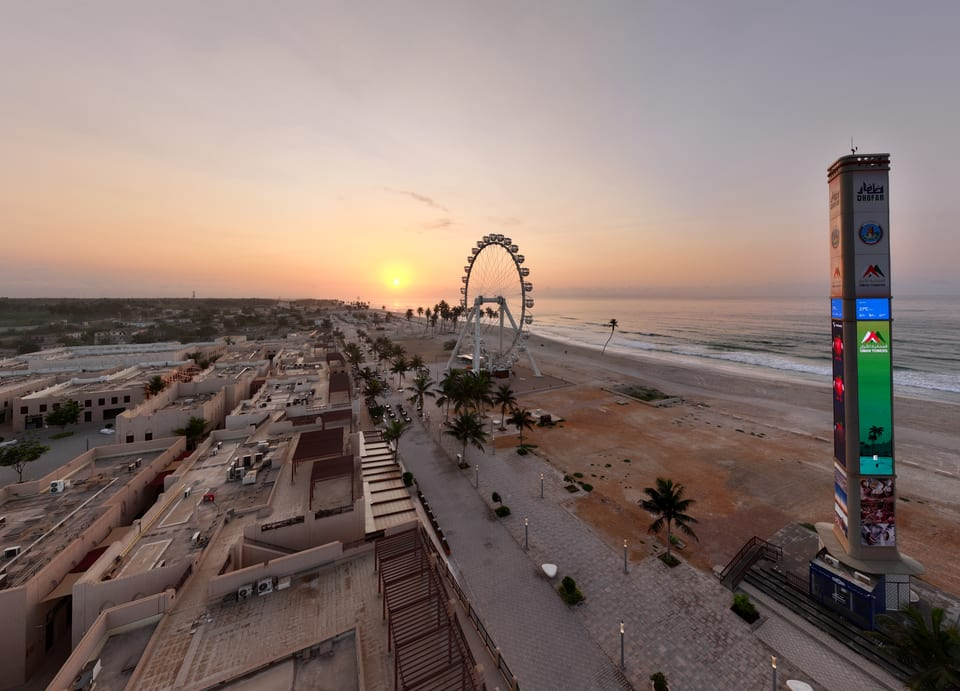
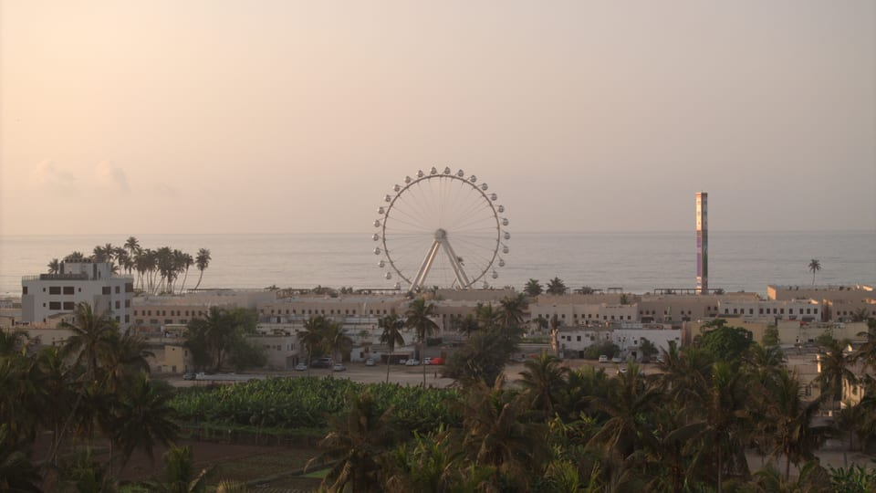
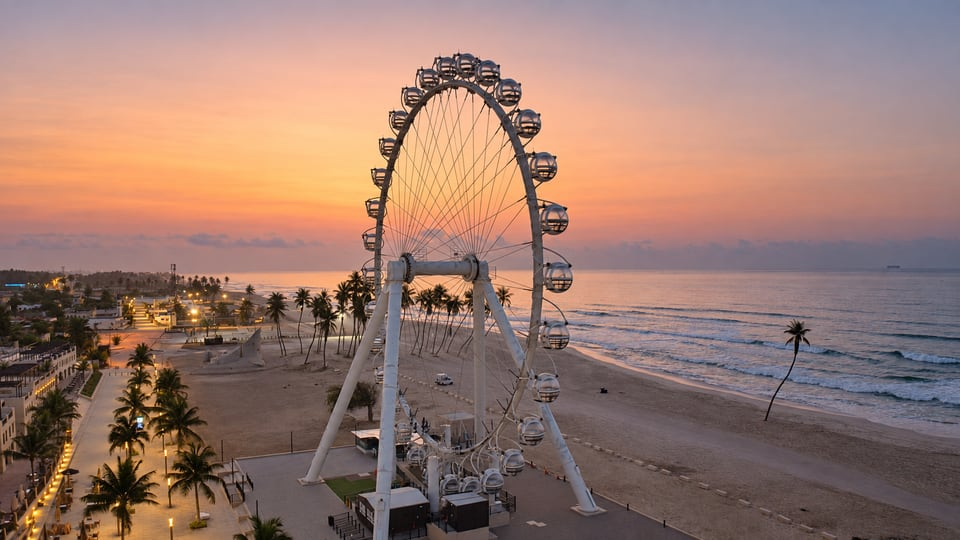
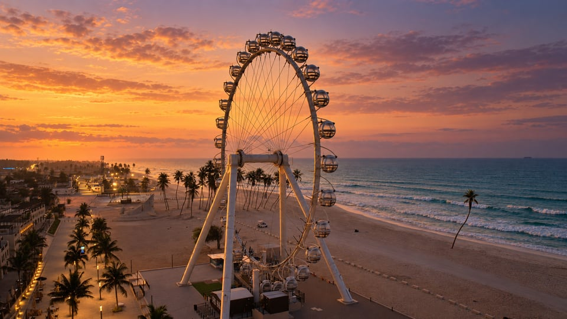

Instagram Опубликовано
Reel опубликован; аватарка и био применены.

Оформление аккаунтов, первый обзорный ролик и тексты для четырёх социальных сетей — в одном месте для проверки и запуска.
Публичные ссылки и снимки проверок — ниже. Для Snapchat требуется проверить мобильную публикацию или права аккаунта. Реклама не создавалась.

Реальное фото · DJI_20261001055746_0005_D.DNG
Три ролика опубликованы. В Snapchat сохранено оформление и загружен файл, но публичной публикации пока нет.
Reel опубликован; аватарка и био применены.
Reel подтверждён по публичной ссылке; аватарка и био применены.
Видео опубликовано; оформление канала сохранено.
Аватарка, обложка, био, название, сайт, категория и местоположение сохранены и проверены. Видеофайл загружен.
Публикация заблокирована: PERMISSION_DENIED — Organization not spend ready. Перед этим кнопка Post была недоступна с коммерческой маркировкой и сообщением «No approved brands yet».
Snapchat: проверить публикацию через мобильное приложение или необходимые права и настройки аккаунта. Instagram: добавить или проверить кликабельную ссылку через мобильное приложение. YouTube: проверить возможность своей обложки и активность внешних ссылок в описании видео. Рекламные кампании не создавались.
Исходный логотип сохранён. Морской фон, бирюза и золотая круглая рамка соединяют все площадки в одну визуальную систему.


Четыре обложки. Наполнение «Визит» и FAQ — после подтверждения условий посещения.
Настоящие кадры колеса, двуязычные титры и музыкальная дорожка. Вертикальный формат для коротких видео и горизонтальный для YouTube.
Оба файла доступны для просмотра. Наличие экспорта не подтверждает публикацию в аккаунтах.
Арабский — первым, английский — следом. Кнопки копируют полный текст из copy-pack.json. Сохранение полей и публикация проверяются отдельно.
@eyesalalah
عين صلالة 🎡 شاهد صلالة من منظور جديد See Salalah from a new perspective. صلالة، عُمان | Salalah, Oman salalaheye.om
صلالة كما لم ترها من قبل. 🎡 نظرة أولى على عين صلالة، ومنظور جديد للمدينة. تعال واستمتع بإطلالة على صلالة من الأعلى مع عين صلالة. احفظ المقطع لزيارتك القادمة إلى صلالة. See Salalah from a whole new angle. 🎡 Your first look at Salalah Eye and a new perspective on the city. Come and see Salalah from a bird’s-eye view with Salalah Eye. Save this for your next visit to Salalah. #عين_صلالة #SalalahEye #صلالة #Salalah #Oman
Оформление профиля сохранено. Первый Reel опубликован.
شاهد صلالة من الأعلى 🎡 See Salalah from above. صلالة، عُمان | Salalah, Oman
عين صلالة — صلالة من منظور جديد. تابع لقطات عجلة عين صلالة والإطلالات من الأعلى في صلالة، عُمان. Salalah Eye — Salalah from a new perspective. Follow views of the wheel and Salalah from above, in Salalah, Oman.
صلالة كما لم ترها من قبل. 🎡 اكتشف عين صلالة في هذا المقطع، وشاهد المدينة من منظور جديد. تعال واستمتع بإطلالة على صلالة من الأعلى مع عين صلالة. شارك المقطع مع من تود أن يرافقك. See Salalah from a whole new angle. 🎡 Discover Salalah Eye in this first look and see the city from a new perspective. Come and see Salalah from a bird’s-eye view with Salalah Eye. Share this with someone you’d bring along. الموقع الرسمي | Official website: https://salalaheye.om/ الموقع على الخريطة | Find us: https://maps.app.goo.gl/wUrPWsg8K5au6Z53A #عين_صلالة #SalalahEye #Salalah
Канал UCCMp_lezD2sZhgYKPtqCQRw
عين صلالة — صلالة من منظور جديد. لقطات لعجلة عين صلالة وإطلالات على المدينة من الأعلى، في صلالة، عُمان. اشترك واكتشف صلالة من زاوية جديدة. Salalah Eye — Salalah from a new perspective. Views of the Salalah Eye wheel and the city from above, in Salalah, Oman. Subscribe and discover a new angle on Salalah.
صلالة من الأعلى 🎡 Salalah from Above | Salalah Eye
صلالة كما لم ترها من قبل. 🎡 هذه نظرتك الأولى إلى عين صلالة في عُمان. تعال واستمتع بإطلالة على صلالة من الأعلى مع عين صلالة. اشترك لمشاهدة المزيد من إطلالات صلالة. See Salalah from a whole new angle. 🎡 Your first look at Salalah Eye in Oman. Come and see Salalah from a bird’s-eye view with Salalah Eye. Subscribe for more views of Salalah. الموقع الرسمي | Official website: https://salalaheye.om/ الموقع على الخريطة | Find us: https://maps.app.goo.gl/wUrPWsg8K5au6Z53A #SalalahEye #صلالة #Salalah
Профиль подтверждён и оформлен. Видео загружено, но не опубликовано.
عين صلالة 🎡 صلالة من منظور جديد Salalah from a new perspective. صلالة، عُمان | Salalah, Oman
صلالة كما لم ترها من قبل. 🎡 تعال واستمتع بإطلالة على صلالة من الأعلى مع عين صلالة. See Salalah from a whole new angle. 🎡 Come and see Salalah from a bird’s-eye view with Salalah Eye.
صلالة من الأعلى 🎡 اكتشف عين صلالة Salalah from above 🎡 Discover Salalah Eye
Содержательная проверка арабского выполнена при подготовке. Проверка носителем языка пока не проводилась. Цены, часы работы и неподтверждённые обещания не добавлены.
Реальные материалы отделены от генеративных вариантов. Оригинальные фото и RAW сохранены без изменений.


Эти изображения обработаны генеративным инструментом. Закат — художественная версия; даже мягкая ретушь может реконструировать детали. Они не подтверждают фактический вид объекта в другое время суток.


Один узнаваемый кадр, короткий заголовок и оригинальный знак Salalah Eye. Формат готовим под место показа, затем проверяем в аккаунте.
Обложка обещает ровно то, что есть внутри. Выберите колесо, кабину или берег как главный объект; оставьте рядом спокойное поле для текста. Не превращайте первый экран в афишу со всеми подробностями.
Обложка профиля или канала. Обложка профиля или канала — отдельный макет: не растягивайте миниатюру видео в баннер. Сохраняйте оригинальный логотип и точное название; проверяйте расположение ключевых элементов в доступных desktop/mobile/TV-превью нужного аккаунта. Размеры и кадрирование берите из актуального нативного редактора и официальной справки этой поверхности.
Пунктир показывает наш стартовый запас для текста, а не гарантированную безопасную область площадки. Перед выпуском проверьте реальное превью, обрезку профиля и доступные функции именно этого аккаунта. Для Shorts проверяйте текущую возможность загрузки своей миниатюры отдельно.
| Назначение | Мастер | Рабочее поле | Контроль перед выпуском |
|---|---|---|---|
| YouTube · превью | 3840 × 2160 · 16:9 | 5% с каждого края192 px по X · 108 px по Y | Превью 320 px; ограничения загрузки и доступ аккаунта |
| Вертикальная обложка | 1080 × 1920 · 9:162160 × 3840 — при необходимости | 90 / 250 / 90 / 420 pxСлева / сверху / справа / снизу | Превью 360 px; обрезка профиля и элементы интерфейса |
| Карусель · основной | 1080 × 1350 · 4:5 | 80 px с каждой стороны | Все слайды одного размера; текст читается при ширине 360 px |
| Карусель · квадрат | 1080 × 1080 · 1:1 | 80 px с каждой стороны | Отдельная адаптация композиции; без сжатия и случайной обрезки |
Рекомендуем 6–8 слайдов, если теме нужен рассказ. Шесть ниже — пример редакционной структуры, а не лимит площадки.
Первый слайд даёт причину открыть пост, середина показывает реальный объект и раскрывает тему, последний предлагает одно действие. Не повторяйте одну обложку шесть раз.
Схема последовательности · макеты не подготовлены для публикации
Один ясный заголовок и сильный кадр. Зачем смотреть дальше?
Покажите место и объясните, о чём этот небольшой рассказ.
Раскройте главный тезис на реальном фото или проверенном факте.
Добавьте другой ракурс, крупный план или конкретное наблюдение.
Завершите тему полезной деталью; не добавляйте слайд ради количества.
Предложите сохранить, поделиться или узнать больше — один CTA.
Схемы объясняют композицию. Они не являются готовыми постами, подтверждением публикации или результатом проверки арабского носителем языка.
Подготовка, загрузка и подтверждённая публикация — отдельные этапы. Материалы доступны для просмотра и скачивания.